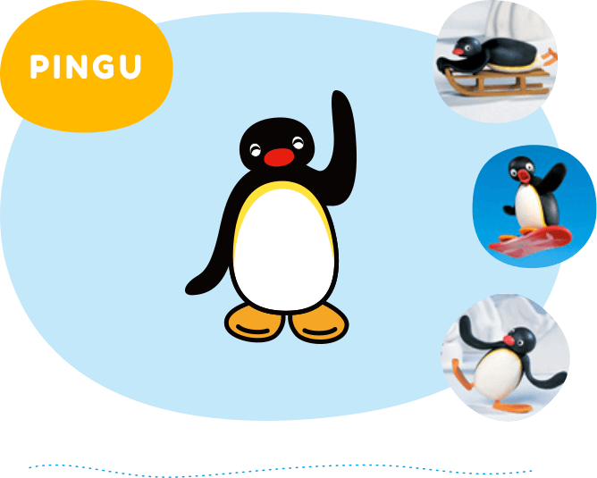
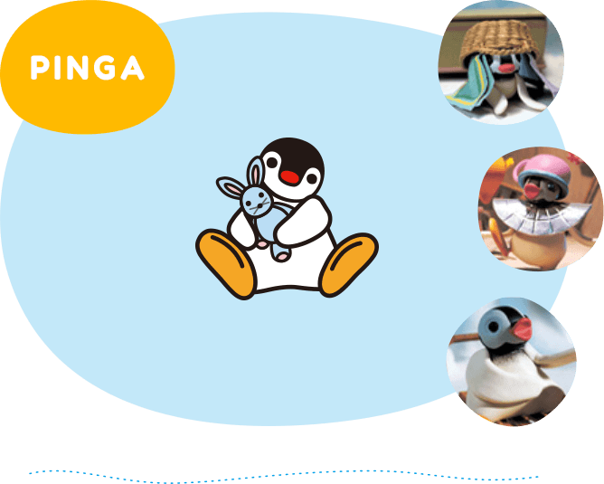
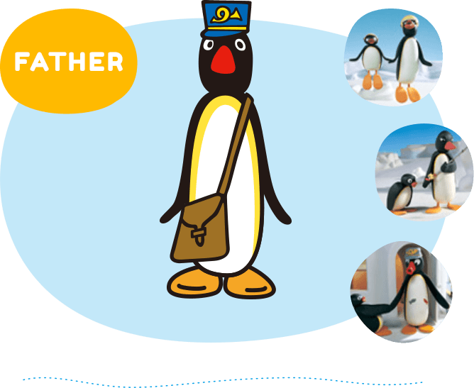
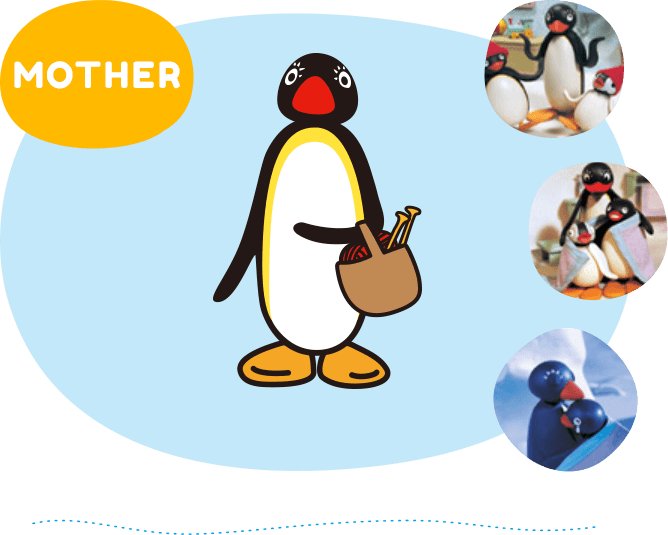
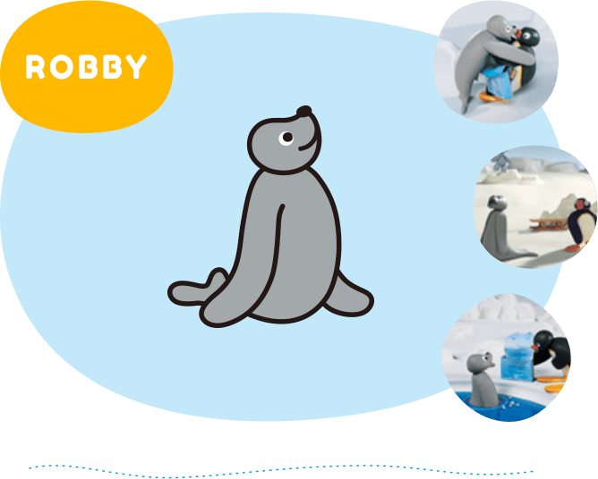
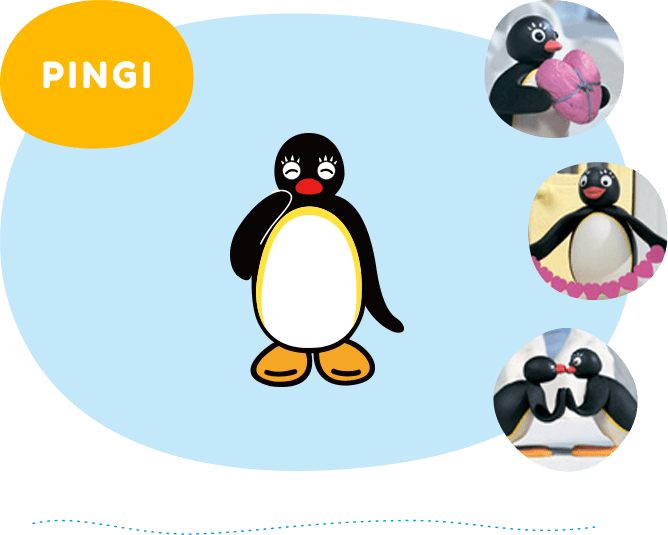

Pingu was born in 1984, by the plasticine brainchild of animators Otmar Gutmann and Harald Muecke. Ever since Pingu made his first appearance in several short episodes, it has starred in a pilot movie that was developed in 1986 for Swiss TV and followed its success.
Adored for 30 years, Pingu has achieved worldwide recognition and universal appeal with his unique "Penguinese" language that needs no translation. His fondness for turning his beak into a trumpet lets us know whether he is happy or sad. This is one penguin who wears his heart on his flipper!
And now, the globally adored, Swiss-born character Pingu is returning to television with new stories and new characters. This fresh, fun series brings the cheeky penguin and his world back to life using 3D computer graphics, totally recreating the texture of the original Claymation, which began in the 1980s.

Pingu is a 5-year-old boy penguin. Although he is quite cheeky and mischievous, Pingu has a good heart. However, he has caused some unexpected incidents when he does crazy things! Just as Pingu is good at getting into scrapes, he is good at getting out of trouble, too. His fun-loving personality never fails to charm everyone.

Pinga is 3 years old and she is Pingu’s little sister. She loves her brother and follows him everywhere. Occasionally, when she thinks that her brother is ignoring her, Pinga gets so upset that she ends up crying! Pinga is a cutie loved by everyone, but her carelessness tends to cause trouble for those around her, especially her big brother, Pingu!

Father is a busy postman, but he always puts his family first. He is also good with housework and at making toys. He sometimes gets angry when his kids get too naughty, but at the end of the day, he is a loving dad who just wants his children to be happy and healthy.

Mother is great at baking cakes and keeping things in order at home. She works with Father to bring the kids up the right way. She is always there with a warm hug, but she can also be strict when she has to discipline the children. She enjoys knitting, reading the papers, or simply relaxing at home.

Robby is an energetic and enthusiastic seal, and he and Pingu are the best of friends. Just like Pingu, Robby often gets in trouble but these two are inseparable and they can often be found playing all over the park. This friendship started when Pingu and Robby went fishing together. This shared love for fishing - their true passion - has taken their friendship from strength to strength.

Pingi is not as adventurous as Pingu is and she will only get herself into trouble or discover new things if Pingu has dragged her into it. She is very generous and anxious to be liked by everyone she meets. When Pingu is around, she is happy to take a backseat in the action, but when she needs to, she has a surprisingly tough nature and a great ability to stand up for herself.